Persönliche Beziehungen
Weil man sich über die Treffen hinweg immer wieder begegnet, entstehen aus ersten Kontakten echte Freundschaften – ein fester Kreis an Vertrauten in ganz Norddeutschland.
Ein Netzwerk studentischer Initiativen aus dem Norden Deutschlands – vernetzt über Städtegrenzen hinweg durch regelmäßige Treffen und echten Austausch.
NCN steht für North Consulting Network und ist ein Netzwerk studentischer Initiativen aus verschiedenen Städten im Norden Deutschlands. Ziel des NCN ist es, diese Initiativen und ihre Mitglieder über die Grenzen der eigenen Stadt hinaus miteinander zu verbinden – durch regelmäßige, wiederkehrende Treffen, bei denen man sich nicht nur einmal, sondern immer wieder sieht.
Diese studentischen Unternehmensberatungen bilden gemeinsam das North Consulting Network.
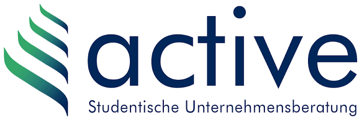
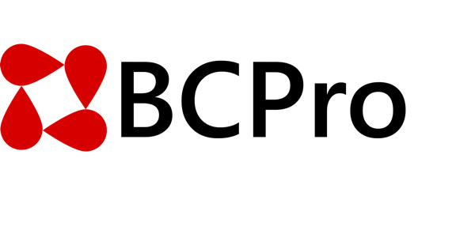
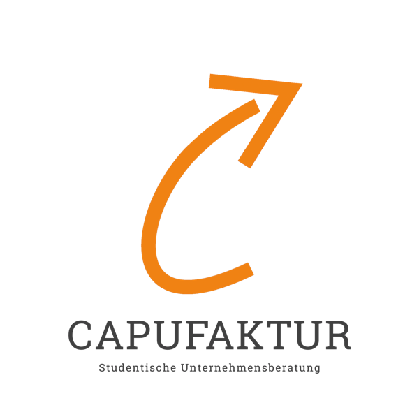
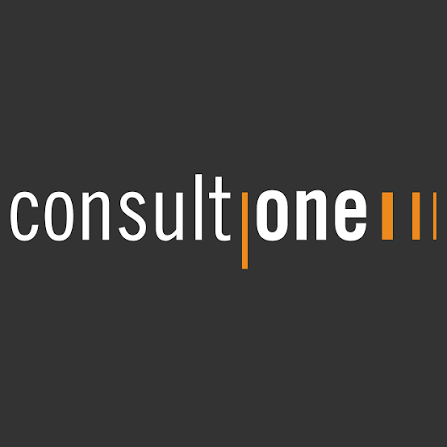
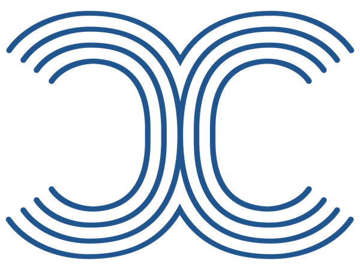
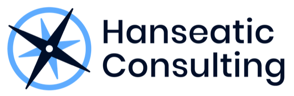
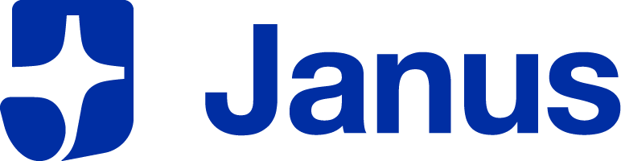
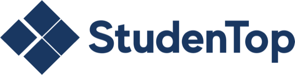
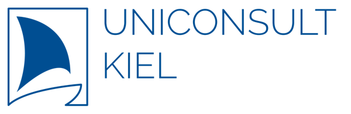
Im Zentrum steht ein Austausch, der mehr ist als nur Networking auf einer einmaligen Veranstaltung.
Weil man sich über die Treffen hinweg immer wieder begegnet, entstehen aus ersten Kontakten echte Freundschaften – ein fester Kreis an Vertrauten in ganz Norddeutschland.
Jede Initiative tickt anders. Im direkten Gespräch bekommt man Perspektiven auf Bereichsarbeit, Vereinsführung und Projektarbeit, die man in der eigenen Initiative so nicht hätte.
Man sieht, wie andere mit ähnlichen Themen umgehen – im Umgang mit Verantwortung, in der eigenen Rolle oder ganz persönlich – und entwickelt sich weiter.
Jedes Treffen findet in einer anderen Stadt statt. Man lernt nicht nur neue Orte, sondern auch die jeweilige lokale Community kennen.
Das Netzwerk wird durch eine zentrale NCN-Leitung koordiniert, die als Controlling- und Organisationsinstanz fungiert. Sie sorgt für einen reibungslosen Ablauf der Treffen, unterstützt die ausrichtenden Teams bei der Vorbereitung, kümmert sich um Wissensmanagement und Dokumentation und betreut die teilnehmenden Initiativen sowie das Wachstum des Netzwerks.
Jedes Treffen wird von einer der teilnehmenden Initiativen vor Ort organisiert – dem sogenannten Ausrichterteam. So wechselt der Austragungsort von Treffen zu Treffen und die Gastgeberrolle rotiert durch das Netzwerk.
Das NCN trifft sich regulär viermal im Jahr – aufgeteilt in zwei unterschiedliche Formate.
Zwei größere, etwas formellere Treffen pro Jahr, die jeweils von Samstag bis Sonntag stattfinden und eine gemeinsame Übernachtung einschließen. Sie werden zeitlich vor die BDSU-Kongresse gelegt, damit die Teilnehmenden bereits im Vorfeld Kontakte knüpfen können. Der Ablauf umfasst Workshops, ein Plenum zum Austausch wichtiger Netzwerk-Themen sowie ein gemeinsames Rahmenprogramm.
Zwei informellere Treffen pro Jahr ohne festen Ablauf, die in erster Linie dem zwischenmenschlichen Austausch dienen. Hier steht das gemeinsame Erlebnis im Vordergrund – etwa bei einem Weihnachtsmarktbesuch, einer Bartour oder einem Strandtag in einer der norddeutschen Mitgliedsstädte.
Ein Rückblick auf Workshops und Treffen des letzten Jahres.
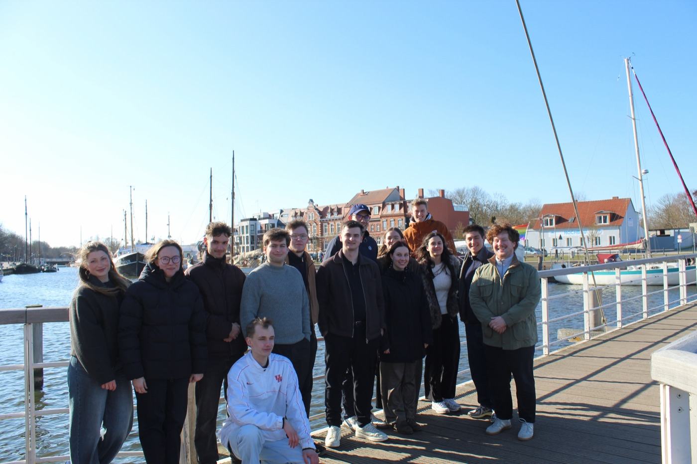
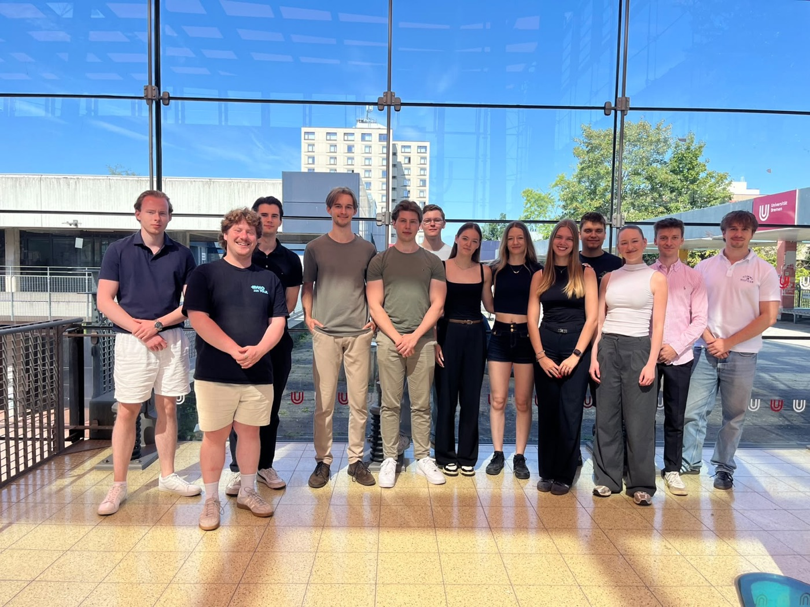
Das Besondere am NCN ist die Kombination aus Kontinuität und Vielfalt: Anders als bei einmaligen Veranstaltungen begegnen sich die Mitglieder durch die wiederkehrenden Treffen immer wieder, sodass Beziehungen wachsen können, statt nach einem einzigen Treffen gleich wieder abzureißen. Gleichzeitig bringt jedes Treffen neue Gesichter, neue Städte und neue Perspektiven aus den unterschiedlichen Initiativen mit sich. So entsteht ein lebendiges, norddeutsches Netzwerk junger Menschen, die sich für unternehmerisches Engagement, Beratung und ehrenamtliche Vereinsarbeit interessieren.
Schreib uns, egal ob du Mitglied werden, mit uns kooperieren oder einfach mehr erfahren möchtest.
NCN-Leitung